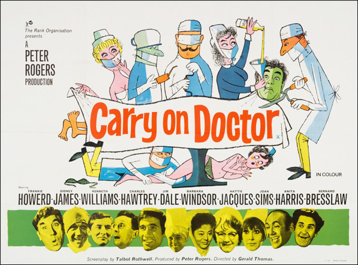

Peter Rogers
Talbot Rothwell
Francis Bigger (Howerd) is a charlatan faith healer, convinced that "mind over matter" is more effective than medical treatment. During a lecture, he stumbles offstage and is admitted to the local hospital. In hospital, he incessantly groans and whines about being "maltreated", demanding better treatment than the other, eccentric patients. These include: bedridden layabout Charlie Roper (James) who shams illnesses to stay in hospital; Ken Biddle (Bresslaw) who makes frequent trips to the ladies' ward to flirt with his love interest, Mavis Winkle (Dilys Laye); and Mr Barron (Hawtrey) who seems to be suffering sympathy pains while his wife awaits the birth of their baby. While being treated, Bigger meets two very different doctors. Clumsy yet charming Dr Kilmore (Dale) is popular with the patients and loved from afar by the beautiful Nurse Clark (Harris) while hospital registrar Dr Tinkle (Kenneth Williams) is universally detested, as is his battleaxe Matron (Jacques), who harbours an unrequited love for him.
After Bigger's arrival, novice nurse Sandra May (Windsor), arrives at the hospital with her intention to declare her (questionable) love for Tinkle, and enters his room, violating hospital rules that female staff are not permitted in the male quarters. Matron and Kilmore burst in on her declarations of love, which are cruelly rebuffed by Tinkle. Matron throws Nurse May out, and she leaves while tearfully announcing she'd rather die than live without Tinkle. Dr Tinkle fears for his position after this incident, and contrives with Matron to get rid of Kilmore and Sandra May, lest they reveal the truth.
Shortly after, Sandra May climbs on to the roof of the nurses' home to sunbathe in her bikini top. Dr Kilmore and Nurse Clark assume she is going to throw herself off the roof in despair after Tinkle's rejection. Kilmore rushes to save her and climbs on to the roof. He realises she is sunbathing and prepares to leave, but Sandra assumes to her horror he is leering over her, and shrieks in fear. Her screams attract attention and soon the entire hospital staff and townspeople flock to watch. Nurse Clark attempts to help Kilmore before he falls off, but he accidentally tears her skirt off, leaving her in her underwear and stockings. Kilmore crashes through a window to safety, but lands in a bath ... with a nurse in it, who assumes he is attacking her. His good reputation is destroyed among everyone except his patients.
Dr Kilmore is given a hearing with the hospital governor, but Matron and Tinkle deny his revelation of Sandra May's fight with Tinkle. As Sandra May has left the hospital, Kilmore has no proof to support him and is forced to resign. Nurse Clark reports the treachery of Tinkle and Matron to the patients and together they decide to exact revenge upon the pair for what they have done.The patients stage a nocturnal mutiny - their first victim is Sister Hoggett, whom the female patients overpower and leave bound and gagged in a linen cupboard, incapacitating her from alerting the orderlies. The male patients take care of Tinkle while the females take care of Matron. The ladies manage to get Matron to confess by torturing her with a towel bath, while the men get Tinkle to confess by performing an enema on him, since their previous attempt to do so by giving him an icy cold bath failed. The next day, Dr Kilmore is appointed the new hospital registrar while Tinkle is reduced to a simple doctor. Mr Barron, now fully recovered and cured, and his wife finally have their baby and Bigger and his newly wedded wife Chloe (Sims) bicker as they leave the hospital. However, on their way out, Bigger deliberately falls on the steps and injures his back again to avoid anymore difficulties with his wife and is brought back to the hospital.
Filming dates: 11 September - 20 October 1967.
Interiors: Pinewood Studios, Buckinghamshire.
Exteriors: (1) Maidenhead, where the Town Hall doubled for the hospital, (2) Masonic Hall, Uxbridge, (3) Westbourne Street, London WC2.
The film was the third biggest general release hit at the British box office in 1968, after The Jungle Book and Barbarella.
Monthly Film Bulletin - "The plot is no more than a mess of inane sketches involving the misfortunes of hospital patients and staff, punctuated by a string of tasteless jokes about castor oil, bedpans and parts of the anatomy."